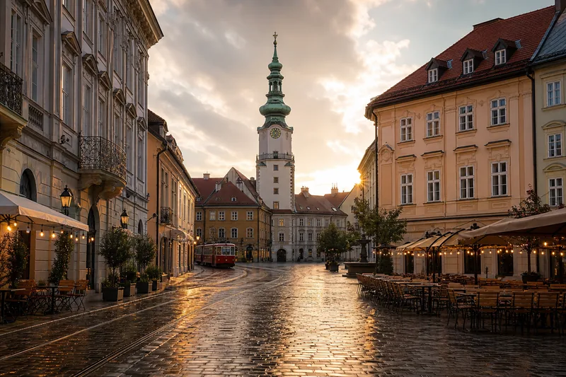
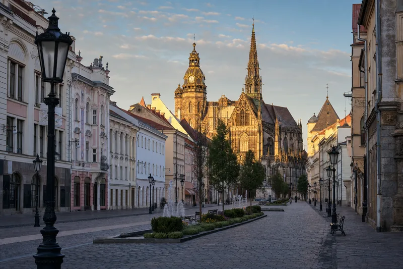
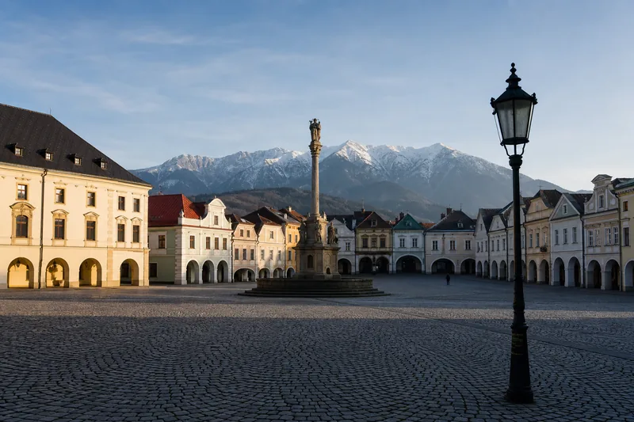

Charter Capital · Slovakia Route
Дайджест →
Словакия. Тихий вход в ЕС.
Не паспорт за день. Маршрут на 8 лет, который банк, школа и налоговая признают своим. ВНЖ через бизнес или сотрудника, ПМЖ, паспорт ЕС - и капитал, который параллельно работает.
Гражданство Словакии нельзя купить. Закон 40/1993 не предусматривает CBI. Мы строим легальное присутствие, а не продаём паспорт.
Маршрут на 8 лет·две параллельные ветки
Что происходит каждый год.
Что происходит каждый год.
Сверху - вы, снизу - капитал.
Натурализация - это не одна станция, а маршрут с пересадками. Каждая станция требует своего пакета документов и своей биографии. Капитал не может просто стоять - он живёт параллельно и помогает на каждой станции.
Год 0Деловая виза DSoF, бизнес-кейс, s.r.o.
Год 1ВНЖ, 1 годКарта резидента
Год 2-4ПродленияНалоги, оборот, стаж
Год 5ПМЖТест A2 словацкого
Год 6-7ПодготовкаЧистая 8-летняя биография
Год 8Подача на паспортТест языка и истории
Год 9-10Паспорт ЕСПрисяга, ID, загран
Капитал
SoF-досье, заход в Charter Asia Fund
Капитал
Открытие счёта в SK-банке под s.r.o.
Капитал
Доход + дивиденды как самообеспечение
Капитал
Property в Братиславе или Пхукете
Капитал
Диверсификация в EU-фонд
Капитал
Полный налоговый профиль SK-резидента
Капитал
Свободное движение средств в 27 стран ЕС
Маршрут реалистичный. Тот, кто обещает паспорт за 12 месяцев - врёт или не понимает закон 40/1993.
Три способа·один паспорт
Через что мы заходим в Словакию
Маршрут не один. Подбираем по тому, что у вас уже есть: бизнес-кейс, профессия, или родственники из ЧСФР.
ВНЖ через бизнесОсновной
Для предпринимателей с собственным доходом и кейсом, который можно перенести или открыть в Словакии.
- Регистрация s.r.o. (LLC) - 1-2 недели
- Деловая виза D - 60-90 дней
- ВНЖ на 1 год по виду, продление от оборота
- SoF-досье + бизнес-план под мин.требования
- Налог 21% корпоративный, 7% дивиденды
ВНЖ через работуSingle Permit
Для специалистов, которые получают офер от словацкого работодателя, или для внутрикорпоративного перевода (ICT).
- Single Permit, до 5 лет с продлением
- Голубая карта ЕС для high-skilled (от €1700/мес.)
- ICT-перевод между офисами одной группы
- Без SoF-кейса, биография через работодателя
- Семья - дополнительный пакет на воссоединение
Восстановление по корнямБез ценза
Если у вас есть документы о проживании предков на территории ЧСФР или Словакии до 1992 года.
- Закон о возврате гражданства, поправки 2015
- Без 8-летнего ценза оседлости
- Без обязательного теста словацкого
- Архивные справки + генеалогия
- Подача через консульство или МВД SK
География·почему Словакия
1.5 часа до Вены. Евро. Шенген. Тихо.
Словакия - центр Европы по карте, тихий по информационному фону. Это и есть её актив для тех, кто строит присутствие, а не делает шоу.
Тихая страна на стыке маршрутов.
Словакия не звенит в новостях. Она не Кипр, не Мальта, не предмет регулярных проверок Брюсселя. Это её главный актив для биографии.
21% корпоративный налог, евро с 2009, Шенген с 2007, аэропорт Wien-Schwechat в 50 км от Братиславы.
21%
корп. налог
€
евро с 2009
2004
в ЕС с
2007
в Шенгене с
Под клиента·три города
Где жить. Что это значит на практике.
Словакия маленькая - но очень разная. От бизнес-столицы у венской границы до ИТ-Кошице на восточной стороне.

Bratislava
Столица · бизнес · западная граница
аренда 2k
€1100-1500
аэропорт VIE
50 мин
EN-школа
€10-14k
пробки
2/10

Košice
Восток · IT-хаб · университет
аренда 2k
€650-950
аэропорт KSC
15 мин
EN-школа
€7-10k
пробки
3/10

Žilina
Север · промышленность · горы
аренда 2k
€550-800
аэропорт BTS
2.5 ч
EN-школа
€6-8k
пробки
1/10
Капитал параллельно·пока идёт натурализация
Где живут ваши деньги все эти 8 лет
ВНЖ, ПМЖ и паспорт - это бумаги. Но капитал не может ждать в наличных. Он должен работать, давать доход и подтверждать самообеспечение - иначе банк закроет счёт, а МВД не продлит вид.
Три инструмента, которые мы строим параллельно с маршрутом
Каждый - часть одной картины. Доход + биография + ликвидность.
AF · Asia Fund
Регулярный доход в долларах
Сингапур-юрисдикция. Дивиденды как подтверждение самообеспечения для МВД и SK-банка.
Подробнее →
CP · Property
Недвижимость как кейс
Квартира в Братиславе под аренду или Пхукет под доход. Часть бизнес-плана для s.r.o.
Подробнее →
PY · Pay
ВЭД-платежи под банк
Когда s.r.o. начнёт платить за зарубежные услуги - платёжный агент с AML-досье.
Подробнее →
Честно про роли·что мы, что партнёры
Часть маршрута мы делаем сами.
Часть маршрута мы делаем сами.
Часть - словацкие лицензированные адвокаты.
Charter Capital · сами
Финансовая инженерия маршрута
- SoF / SoW досье под словацкий банк и МВД
- Бизнес-план под s.r.o. с расчётом cash-flow
- Налоговая стратегия SK + страна происхождения
- Архитектура капитала: фонд / property / счёт
- Сопровождение онбординга в банке Tatra / VÚB
- Подготовка к интервью EDD, скрипты и кейс
- Координация всего маршрута, ваш единый контакт
Партнёры · в Словакии
Юрисдикция и регистрация
- Словацкие адвокаты с лицензией Slovak Bar
- Регистрация s.r.o., нотариальное заверение
- Переводы и апостили (Bratislava, Košice)
- Подача в МВД (Migračný úrad)
- Сопровождение языкового теста A2 / B1
- Работа с Cudzinecká polícia, продления
- Запросы в архивы для восстановления по корням
Реальные цифры·без приманок
Что стоит каждый этап
Без «4 000 €» в hero. Это совокупный коридор: государственные сборы, словацкие адвокаты и наша работа. Без аренды жилья и налогов после переезда.
| Этап | Charter Capital | Итого |
|---|---|---|
| Регистрация s.r.o. + банк | €2 500 | €3 600-4 000 |
| Деловая виза D + ВНЖ 1 год | €3 800 | €5 500-6 200 |
| Single Permit (работа) | €2 800 | €4 300-4 900 |
| Продление ВНЖ ежегодно | €900 | €1 700-2 000 |
| Подача на ПМЖ (год 5) | €3 200 | €5 200-6 000 |
| Подача на гражданство (год 8) | €5 800 | €10 000-11 500 |
| Восстановление по корням | €4 500 | €8 000-9 400 |
Цифры индикативны - при честных документах, понятной налоговой биографии и стандартной географии источников. Сложные кейсы оценим отдельно. Без аренды жилья (€550-1500/мес.), школы детей и страховых.
60 секунд·предварительный диагноз
Готовы ли вы к Словакии
5 чекбоксов. Покажем, какой маршрут вам подходит, прежде чем тратить час на консультацию.
Отметьте всё, что про вас
Чем больше отмечено - тем короче и чище маршрут.
Границы·с кем не работаем
Когда мы скажем нет
Словакия - страна с серьёзным комплаенсом. Мы не маскируем то, что не выдержит проверки в год 5 или год 8.
Не возьмём в работу
Кейсы, которые рассыпятся на ПМЖ или присяге
Мы строим биографию на 8 лет вперёд. Любая слабость в фундаменте всплывает на этапе ПМЖ или подачи на гражданство - и тогда деньги, время и отношения уже потрачены.
- Цель «убежать и спрятаться» - Словакия не убежище
- Фиктивный бизнес «s.r.o. для галочки», без оборота
- Невозможность показать происхождение средств
- Наличие санкционного следа в группе или у бенефициара
- Выдуманные предки в ЧСФР без архивных подтверждений
- Нежелание реально жить в Словакии 183+ дней
- Брак для гражданства - формально, без совместной жизни
- Ожидание паспорта за 12 месяцев или за инвестиции
FAQ·что спрашивают чаще всего
Восемь честных ответов
Можно ли купить гражданство Словакии за инвестиции?
Нет. Закон 40/1993 не предусматривает CBI. Гражданство только через 8 лет постоянного проживания, через брак (5 лет) с реальной совместной жизнью, либо по корням и оптации без ценза оседлости. Любой, кто обещает «паспорт за инвестицию» - либо обманывает, либо не знает закон.
Как быстро можно получить ВНЖ?
При корректных документах деловая виза D - 60-90 дней, ВНЖ на основании визы - в течение нескольких недель после въезда. Реалистичный коридор от подачи до карты резидента - 4-6 месяцев. Single Permit (работа) - 3-5 месяцев.
Признаёт ли Словакия двойное гражданство?
Формально нет. Но при натурализации не требует отказа от первого гражданства, и не уведомляет страну исхода. На практике большинство держат оба паспорта, не показывая словацкий в стране происхождения. Это юридически тонкий момент - проговариваем индивидуально.
Нужен ли словацкий язык?
Для ВНЖ - не обязателен. Для ПМЖ - уровень A2 (бытовой). Для гражданства - устный и письменный тест, плюс знание истории и общественного устройства Словакии. Освобождаются дети до 14 и старше 65, и этнические словаки. Чешский на 80% взаимопонимаем со словацким - если знаете один, другой даётся легче.
Сколько нужно реально жить в Словакии?
Для удержания ВНЖ - 183+ дня в году. Для подачи на гражданство - 8 лет непрерывного постоянного пребывания. Поездки допустимы (отпуск, командировки), но налоговое и социальное резидентство должно оставаться словацким. Долгое отсутствие сбрасывает счётчик.
Что Charter Capital делает сам, а что у партнёров?
Сами: SoF и SoW досье, AML-пакет, бизнес-кейс под s.r.o., налоговую стратегию, сопровождение онбординга в SK-банке. У партнёров: словацкие адвокаты с лицензией Slovak Bar, корпоративные секретари, иммиграционные консультанты в Братиславе и Кошице. Координируем всё мы - вы говорите с одним менеджером.
Где живёт капитал во время этих 8 лет?
Параллельно строим архитектуру: Charter Asia Fund для регулярного дивидендного дохода, недвижимость (квартира в Братиславе или вилла на Пхукете) для долгосрочного актива, личный счёт в EU-банке для ликвидности. Это и кейс под банк-онбординг в SK, и доход для подтверждения самообеспечения МВД.
Что я получаю по итогу?
Карту резидента Словакии (год 1), карту ПМЖ (год 5-6), словацкий паспорт ЕС (год 8-10) - со свободой жить, работать и вести бизнес в любой из 27 стран ЕС. Безвиз с паспортом Словакии - 173 страны. Для семьи - параллельный пакет на воссоединение, дети получают доступ к ЕС-образованию по местным ценам.
Заявка·разбор на 30 минут
Запросите разбор маршрута
Покажем реалистичный коридор по срокам и деньгам, исходя из того, что у вас уже есть. Без обещаний.
Какой маршрут вам ближе?
Переключите вкладку - подстроим вопросы под ваш сценарий.